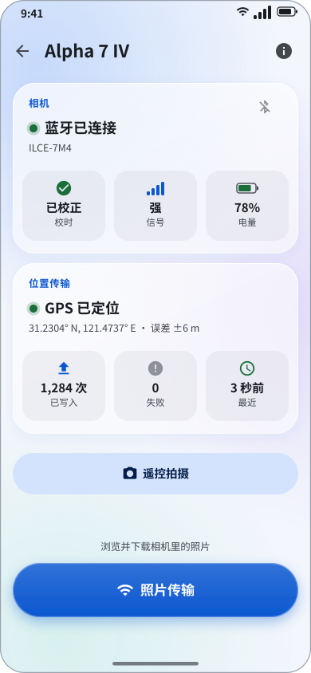
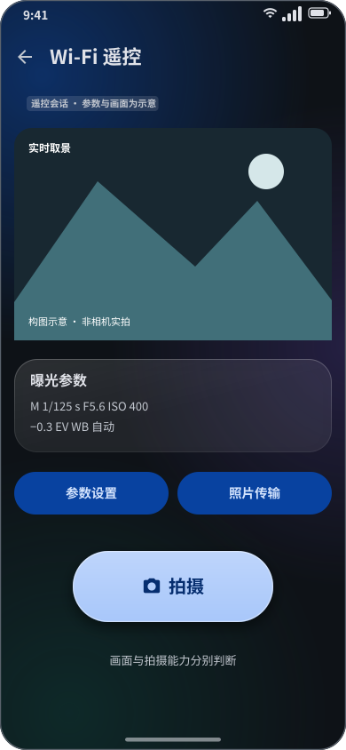
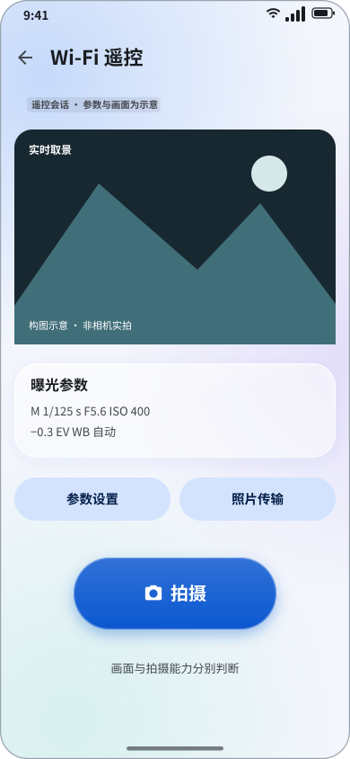
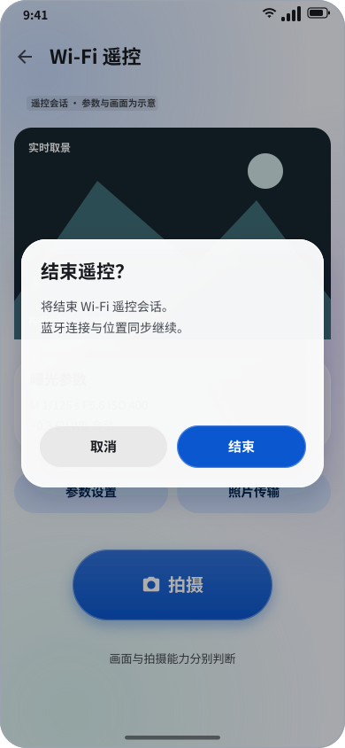
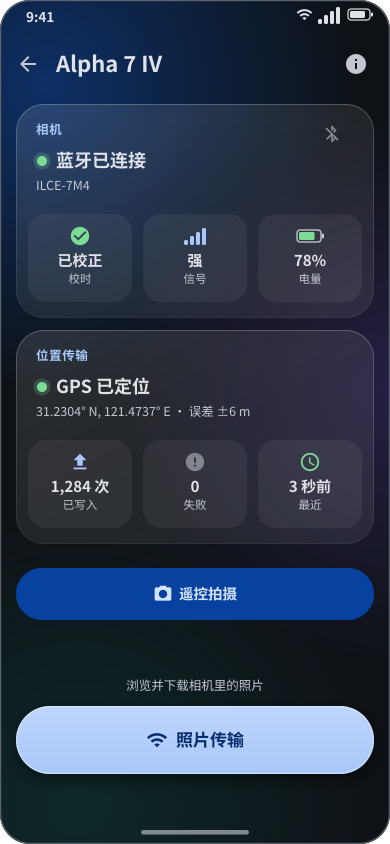

遥控拍摄：轻触快门，看见构图
01 / 方向 · 在 v3 上增加能力，而非重画整个应用

亮色 · 390 × 844 dp 示意
暗色 · 390 × 844 dp 示意本轮交付
Android 12+ · 固定蓝色 · 玻璃层级沿用 v3。只研究与设计，不修改应用。
两条明确路径
蓝牙快门适合轻量触发；Wi-Fi 取景提供画面与能力门控参数。照片传输保持独立入口。
事实、目标、待验证
BLE 与 Wi-Fi 底层保留 ≠ UI 已恢复；曝光参数写入是新能力；示意画面与参数不构成实机支持证明。
实时取景 · 画面优先，控制可达
09 / 拟议 Ready 画面 · 参数值仅为示例

亮色 · 390 × 844 dp 示意暗色 · 390 × 844 dp 示意
取景区域
保持相机画面宽高比，留黑边不裁切；示意图为 3:2。界面不覆盖关键构图；首帧前只显示等待占位。
操作区域
参数卡与拍摄分离；照片传输是次级操作，进入前停取景。曝光参数只在描述符与读回能力完成后开放。
数据状态
controlReady、liveViewReady、propertyReady 独立；画面故障不自动断开仍可用的快门链。
布局适配
竖屏主方案；横屏把取景与控件左右分区。字体放大时控件区滚动，拍摄按钮不被系统导航覆盖。
退出与后台：Wi-Fi 结束，蓝牙常驻
14 / 用户确认采用 v3 · 遥控与照片传输一致

亮色 · 390 × 844 dp 示意
暗色 · 390 × 844 dp 示意页面返回
释放遥控按键与 Wi-Fi 会话，返回设备页。普通空闲返回直接收尾；有未决拍摄/写入时提示后果，不重发动作。
Home / 后台 / 锁屏
结束 Wi-Fi，停止取景和前台遥控监控；蓝牙+GPS 继续，互斥机依相机菜单能力。回到前台不自动再启动取景。
划卡 / 根页返回
同样结束 Wi-Fi，保留 BLE 前台位置服务。只有用户主动断开蓝牙才持久化断连意图。
需改的现状
AndroidWifiRemoteScreen 当前 ON_STOP 保留 Wi-Fi。必须改为上述语义，且遥控、照片传输统一，不宣称现有行为已满足。